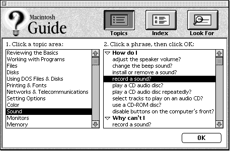
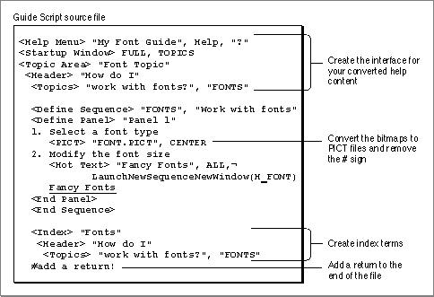

Creating an Interface for Your Help Content
Once you have converted all of your Windows Help files, you need to construct an interface (that is, an access window) so that your users can access your help content. Figure 8-4 shows a typical guide file interface, a Full Access window.Figure 8-4 Creating an interface for your help content

To create an access window, first specify the type of window you want, using the <Startup Window> command. You can choose from three types of access windows: Full Access, Single List Access, and Simple Access. For information on these windows see the chapter "Authoring Tips and Suggestions" in Part 1.
Once you have specified which type of access window you want, you need to define the topic areas, headers, and topics that are visible in the access window.
- Note
- For information on the Guide Script commands used in this section, see the chapter "Guide Script Command Reference" in Part 4.
For example, if you have converted a panel sequence that describes how to record a sound, you might want to define a topic area called "Sound", a header called "How do I", and a topic called "record a sound?" (as illustrated in the Full Access window in Figure 8-4).
- For topic areas, use the <Topic Area> command.
- For headers, use the <Header> command.
- For the topics for the headers, use the <Topic> command.
In addition to creating the access window, you need to
Figure 8-5 illustrates a sample source file with its interface commands.
- name your guide file, using the <Help Menu> command
The guide file name appears in the Help menu whenever your guide file is available.
- convert your bitmaps to PICT files and remove the comment (#) sign from the <PICT> command
- add navigation buttons to your panels
- create an index for your help content, using the <Index>, <Header>, and <Topic> commands
Note that if your Windows Help file contains index terms (they are specified by the 'K' footnote), Guide Maker converts these automatically. The converted index terms do not, however, include titles for the <Header> command; you must provide these. For information on how to design an index, see the chapter "Planning Your Help Content" in Part 1.
Figure 8-5 Constructing an interface for a sample source file

When you have constructed the interface, converted your bitmaps to PICT files, and created an index, you are ready to compile your source files into a guide file (this step is known as building your guide file). For information on how to build your guide file, see the chapter "Creating Your Guide File."